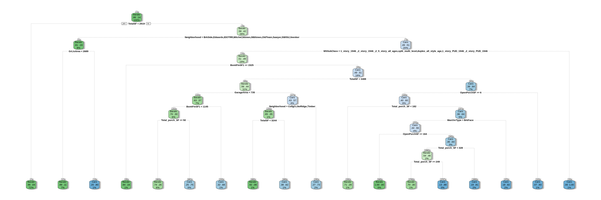

En este punto vamos a aplicar los árboles de decisión a nuestro modelo. Los árboles de decisión se componen del nodo raíz, que es del que partes, y respondiendo preguntas con “si” o “no”, nos iremos moviendo por los nodos interiores hasta llegar a las hojas o nodos terminales. Nuestro objetivo es tener un árbol de decisión que use el menor número de preguntas posible.
Para empezar, cargamos nuestros datos.
library(rpart)
library(rpart.plot)
library(rattle)
library(tidyverse)
library(readr)
dataTrain <- readRDS("datasetTrain.rds")
myvars <- names(dataTrain) %in% c("SalePrice")
dataTrain <- dataTrain[!myvars]
dataTest <- readRDS("datasetTest.rds")
myvars <- names(dataTest) %in% c("SalePrice")
dataTest <- dataTest[!myvars]
val <- readRDS("datasetValidation.rds")
myvars <- names(val) %in% c("SalePrice")
val <- val[!myvars]
set.seed(123)Definimos el árbol de decisión: para ello, como no conocemos ninguna relación con el resto de variables, no escribiremos ninguna fórmula. El árbol que obtenemos es el siguiente:
HouseTREE1 = rpart(GrupoPrecio ~ ., data = dataTrain)
par(mfrow = c(1, 1), xpd = NA) # otherwise on some devices the text is clipped
fancyRpartPlot(HouseTREE1, sub = "") Podemos observar como los tipos de casas se han ido dividiendo según las decisiones tomadas en cada uno de los nodos del árbol. También podemos ver como en los nodos terminales aparece la distribución de la variable GrupoPrecios, así que podemos hacer una estimación del error de clasficación del árbol con las herramientas vistas en clase. Para ello:
##CÁLCULO DEL ERROR A LA HORA DE CLASIFICAR:
table(pred = predict(HouseTREE1, type = "class"), obs = dataTrain$GrupoPrecio)## obs
## pred Barato Caro
## Barato 1449 100
## Caro 40 152n = dim(dataTrain)[1]
error1 = 100 * sum(predict(HouseTREE1, type = "class") != dataTrain$GrupoPrecio)/n
error1## [1] 8.041356##RESULTADO EN EL DATASET DE PRUEBA:
tab1 = table(pred = predict(HouseTREE1, dataTest, type = "class"), obs = dataTest$GrupoPrecio)
ntest = nrow(dataTest)
acierto1 = sum(diag(tab1))/ntest
tab1## obs
## pred Barato Caro
## Barato 578 78
## Caro 45 46acierto1## [1] 0.8353414Un error de poco más del 3% mientras que obtenemos un accuracy del 92,01% para el dataset de test. Con estos valores podemos entender que nuestro modelo está sobreentrenado y tendremos que realizar una poda del mismo. Antes de ponernos manos a la masa para realizar la poda del árbol, vamos a proceder a alterar los hiperparámetros del árbol de decisión. En este caso vamos a meter las probabilidades a priori en el árbol y ver cómo varía el resultado. Para ello, obtenemos el conteo de cuantos elementos pertenecen a cada clase y junto al total de las observaciones podemos sacar la probabilidad a priori.
library(ggplot2)
ggplot(data.frame(dataTrain), aes(x=dataTrain$GrupoPrecio)) + geom_bar()as.data.frame(table(dataTrain$GrupoPrecio))## Var1 Freq
## 1 Barato 1489
## 2 Caro 252length(dataTrain$GrupoPrecio)## [1] 1741Teniendo esta información, metemos la probabilidad a priori.
##AJUSTE HIPERPARÁMETROS:
prob1 = 1737 / 1837
prob2 = 100 / 1837
HouseTREE2 = rpart(GrupoPrecio ~ ., data = dataTrain, parms = list(prior = c(prob1,prob2), split = "information"))
par(mfrow = c(1, 1), xpd = NA) # otherwise on some devices the text is clipped
fancyRpartPlot(HouseTREE2, sub = "")Los resultados obtenidos son los siguientes:
##CÁLCULO DEL ERROR A LA HORA DE CLASIFICAR:
table(pred = predict(HouseTREE2, type = "class"), obs = dataTrain$GrupoPrecio)## obs
## pred Barato Caro
## Barato 1480 146
## Caro 9 106n = dim(dataTrain)[1]
error2 = 100 * sum(predict(HouseTREE2, type = "class") != dataTrain$GrupoPrecio)/n
error2## [1] 8.902929##RESULTADO EN EL DATASET DE PRUEBA:
tab2 = table(pred = predict(HouseTREE2, dataTest, type = "class"), obs = dataTest$GrupoPrecio)
ntest = nrow(dataTest)
acierto2 = sum(diag(tab1))/ntest
tab2## obs
## pred Barato Caro
## Barato 607 93
## Caro 16 31acierto2## [1] 0.8353414Para podar el modelo usaremos las herramientas printcp y plotcp. Con estas herramientas podemos tener el número óptimo de podas. La poda la haremos para evitar el overfitting, como en nuestro caso, ya que con un accuracy de un 0.92 podemos asumir que tenemos un problema de overfitting entre el Train y el Test. Lo que buscaremos será quedarnos con el árbol más pequeño con el menor error obtenido haciendo cross validation. Utilizaremos el primer árbol, pues parece que da menos accuracy y puede tener menos overfitting.
##PODA:
printcp(HouseTREE1)##
## Classification tree:
## rpart(formula = GrupoPrecio ~ ., data = dataTrain)
##
## Variables actually used in tree construction:
## [1] BsmtFinSF1 GarageArea GrLivArea MasVnrType MSSubClass
## [6] Neighborhood OpenPorchSF Total_porch_SF TotalSF
##
## Root node error: 252/1741 = 0.14474
##
## n= 1741
##
## CP nsplit rel error xerror xstd
## 1 0.038889 0 1.00000 1.00000 0.058257
## 2 0.035714 5 0.80556 1.04762 0.059387
## 3 0.031746 8 0.69841 1.05159 0.059479
## 4 0.015873 9 0.66667 0.99603 0.058161
## 5 0.011905 10 0.65079 1.00000 0.058257
## 6 0.010000 17 0.55556 1.00000 0.058257plotcp(HouseTREE1)Plotcp nos devulve una representación gráfica con un resumen del error obtenido haciendo cross validation. Los valores de CP (Complexity Parameter) se dibujan en el eje x mientras que en la y tenemos el valor de la media geométrica para representar la desviación hasta alcanzar el valor mínimo. En nuestro caso ocurre algo curioso: el error relativo aumenta cuando podamos el árbol. Una manera de comprobarlo es hacer que el árbol podado coja el valor menor para “xerror” y vemos que el árbol obtenido da los mismo resultados que al principio.
pruneTREE1 = prune(HouseTREE1,cp = HouseTREE1$cptable[which.min(HouseTREE1$cptable["xerror"]), "CP"])
fancyRpartPlot(pruneTREE1, uniform = TRUE, main = "Pruned Classification Tree", sub = "")Si probamos el árbol podado:
##CÁLCULO DEL ERROR A LA HORA DE CLASIFICAR:
table(pred = predict(pruneTREE1, type = "class"), obs = dataTrain$GrupoPrecio)## obs
## pred Barato Caro
## Barato 1449 100
## Caro 40 152n = dim(dataTrain)[1]
error3 = 100 * sum(predict(pruneTREE1, type = "class") != dataTrain$GrupoPrecio)/n
error3## [1] 8.041356##RESULTADO EN EL DATASET DE PRUEBA:
tab3 = table(pred = predict(pruneTREE1, dataTest, type = "class"), obs = dataTest$GrupoPrecio)
acierto3 = sum(diag(tab2))/ntest
tab3## obs
## pred Barato Caro
## Barato 578 78
## Caro 45 46acierto3## [1] 0.854083Comprobamos que, efectivamente, ha cogido el valor mínimo de la gráfica que implica que el árbol se quede como estaba al principio.
Para realizar la comparación de los dos (o tres) árboles que hemos creado, acudimos a las estadísticas que hemos obtenido.
Las estadísticas las sacamos sobre el conjunto de validación. Para el primer árbol:
tab4 = table(pred = predict(HouseTREE1, val, type = "class"), obs = val$GrupoPrecio)
nval = nrow(val)
acierto4 = sum(diag(tab4))/nval
tab4## obs
## pred Barato Caro
## Barato 205 36
## Caro 15 14acierto4## [1] 0.8111111Las estadísticas para el segundo árbol donde hemos añadido el hiperparámetro con las probabilidades a priori:
tab5 = table(pred = predict(HouseTREE2, val, type = "class"), obs = val$GrupoPrecio)
nval = nrow(val)
acierto5 = sum(diag(tab5))/nval
tab5## obs
## pred Barato Caro
## Barato 211 43
## Caro 9 7acierto5## [1] 0.8074074Las estadísticas con el árbol podado:
tab6 = table(pred = predict(pruneTREE1, val, type = "class"), obs = val$GrupoPrecio)
nval = nrow(val)
acierto6 = sum(diag(tab6))/nval
tab6## obs
## pred Barato Caro
## Barato 205 36
## Caro 15 14acierto6## [1] 0.8111111Como vemos, cuando hemos añadido las probabilidades a priori hemos mejorado la predicción en las casas baratas. Vemos que en nuestro caso es un modelo totalmente desbalanceado ya que tenemos una clara predominación de la clase “Barato” y somos muy buenos prediciendo cuando una casa es barata. Es por ello por lo que los resultados son bastante similares, ya que aunque añadamos las probabilidades a priori solo reforzamos ese aspecto del entrenamiento. Como hemos dicho además en la poda, esto solo ha hecho que el modelo se quede como está pues así ya estamos en el punto con el menor error relativo aunque sea un árbol complejo.
library(rpart)
library(caret)## Loading required package: lattice##
## Attaching package: 'caret'## The following object is masked from 'package:purrr':
##
## liftNos vamos a quedar con el segundo modelo para hacer el estudio de la curva ROC.
pred = predict(pruneTREE1, val, type = "class")
table = table(pred, obs = val$GrupoPrecio, dnn = c("Actual", "Predichos"))
confusionMatrix(table)## Confusion Matrix and Statistics
##
## Predichos
## Actual Barato Caro
## Barato 205 36
## Caro 15 14
##
## Accuracy : 0.8111
## 95% CI : (0.7592, 0.856)
## No Information Rate : 0.8148
## P-Value [Acc > NIR] : 0.598884
##
## Kappa : 0.2528
##
## Mcnemar's Test P-Value : 0.005101
##
## Sensitivity : 0.9318
## Specificity : 0.2800
## Pos Pred Value : 0.8506
## Neg Pred Value : 0.4828
## Prevalence : 0.8148
## Detection Rate : 0.7593
## Detection Prevalence : 0.8926
## Balanced Accuracy : 0.6059
##
## 'Positive' Class : Barato
## draw_confusion_matrix <- function(tab, tab_Actual, tab_Predict){
confusion_matrix <- as.data.frame(tab)
Actual <- factor(confusion_matrix[[tab_Actual]])
Predichos <- factor(confusion_matrix[[tab_Predict]])
Y <- confusion_matrix$Freq
df <- data.frame(Actual, Predichos, Y)
ggplot(data = df, mapping = aes(x = Actual, y = Predichos)) +
geom_tile(aes(fill = Y), colour = "white") +
geom_text(aes(label = sprintf("%1.0f", Y)), vjust = 1) +
scale_fill_gradient(low = "blue", high = "red") +
theme_bw() + theme(legend.position = "none")
}
draw_confusion_matrix(table, "Actual", "Predichos")library(pROC)## Type 'citation("pROC")' for a citation.##
## Attaching package: 'pROC'## The following objects are masked from 'package:stats':
##
## cov, smooth, varpredRoc <- predict(pruneTREE1, newdata=val, type="prob")
area_curva <- multiclass.roc(val$GrupoPrecio, predRoc,)
area_curva##
## Call:
## multiclass.roc.default(response = val$GrupoPrecio, predictor = predRoc)
##
## Data: multivariate predictor predRoc with 2 levels of val$GrupoPrecio: Barato, Caro.
## Multi-class area under the curve: 0.8055